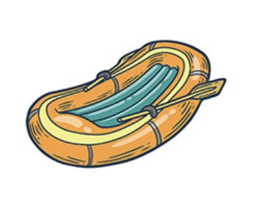
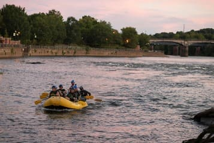
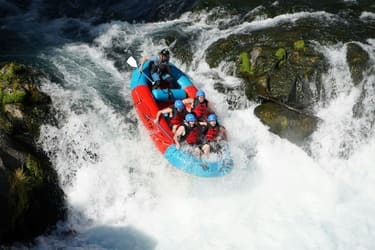
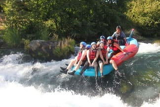
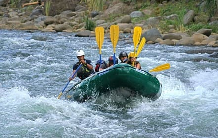
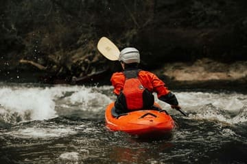

We create unforgettable river adventures with expert guides, breathtaking scenery, and a commitment to safety and fun. Whether you are a first-time rafter or an experienced adventurer, we have an experience for you.


We create unforgettable river adventures with expert guides, breathtaking scenery, and a commitment to safety and fun. Whether you are a first-time rafter or an experienced adventurer, we have an experience for you.
White Water Rafting Co. was founded by passionate river explorers who wanted to share the excitement and beauty of the outdoors. What began as a small local team has grown into a rafting company dedicated to memorable experiences, professional guidance, and responsible river adventures. Our mission remains the same: to bring people together through adventure, teamwork, and a lasting appreciation for nature.




